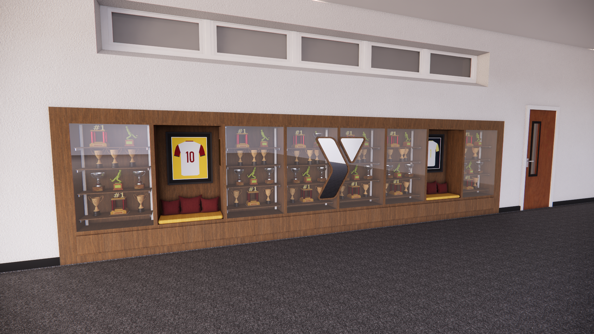
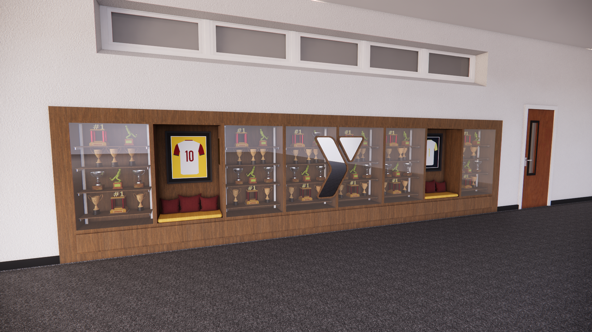
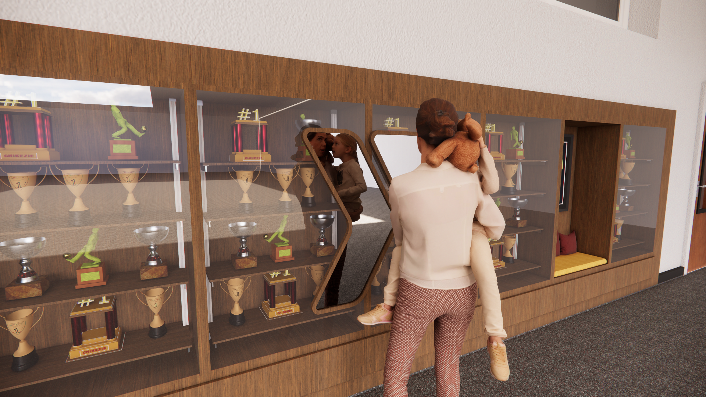
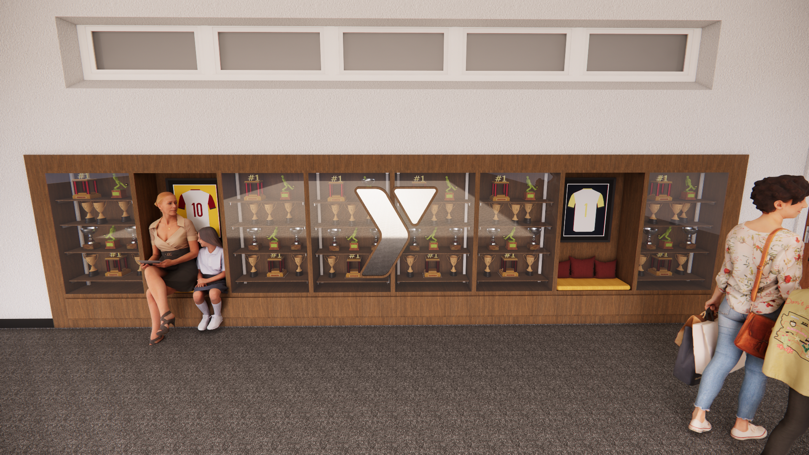
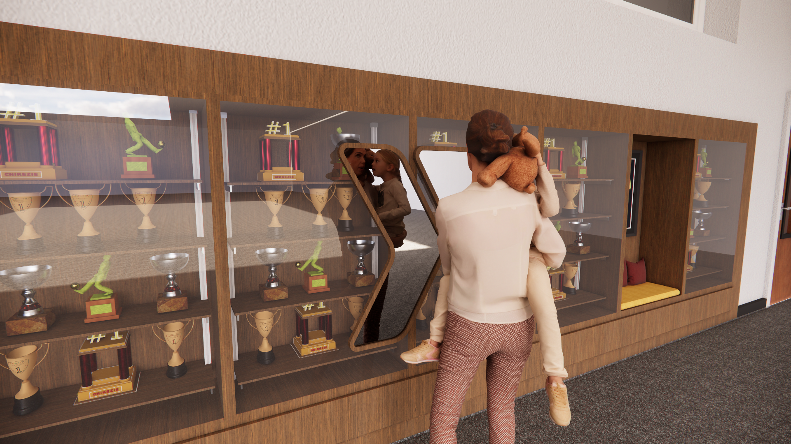
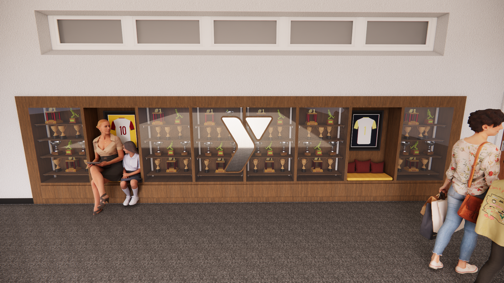

 





YMCA Trophy Case Design Case Study
The YMCA Trophy Case Design project celebrates the accomplishments of the YMCA community by creating a modern and functional display. The project focuses on clean lines, durable materials, and a versatile layout to showcase awards and memorabilia, while enhancing the overall aesthetic of the facility.
Final Iterations
Locker Final Iteration 1: Rendered final visualization of locker design iteration 1.
The two trophy cases under review highlight distinct design approaches. One prioritizes elegance and visual impact, using premium materials to create a striking centerpiece. The other emphasizes functionality and adaptability, designed to maximize storage and ease of use while maintaining a polished appearance. Together, they represent a balance between aesthetic appeal and practical utility, reflecting the diverse needs of the YMCA community.